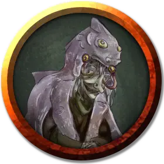

Прита Крипа
Preeta Kreepa
Средний Гуманоид (Человек), хаотично-нейтральный, именной НИП

Класс Доспеха 12 (15 с доспехами мага)
Хиты 40 (9к8)
Скорость 30 футов
| мод | спас | ||
|---|---|---|---|
| СИЛ | 9 | −1 | −1 |
| ЛОВ | 14 | +2 | +2 |
| ТЕЛ | 11 | +0 | +0 |
| мод | спас | ||
|---|---|---|---|
| ИНТ | 17 | +3 | +3 |
| МДР | 12 | +1 | +1 |
| ХАР | 11 | +0 | +0 |
Навыки История +6, Магия +6
Чувства тёмное зрение 120 футов, пассивное Восприятие 11
Языки Общий, Гоблинский, Дварфийский, Подземный
Опасность 6 (2300 опыта)
Бонус мастерства +3
Особенности
Использование заклинаний. Прита является заклинателем 9-го уровня. Её базовой характеристикой является Интеллект (Сл спасброска от заклинания 14, +6 к попаданию атаками заклинаниями). У неё подготовлены следующие заклинания волшебника:
• Заговоры (неограниченно): волшебная рука [mage hand], огненный снаряд [fire bolt], свет [light], фокусы [prestidigitation];
• 1 уровень (4 ячейки): волшебная стрела [magic missile], доспехи мага [mage armor], обнаружение магии [detect magic], щит [shield];
• 2 уровень (3 ячейки): внушение [suggestion], туманный шаг [misty step];
• 3 уровень (3 ячейки): контрзаклинание [counterspell], огненный шар [fireball], полёт [fly];
• 4 уровень (3 ячейки): высшая невидимость [greater invisibility], град [ice storm];
• 5 уровень (1 ячейка): конус холода [cone of cold].
Действия
Кинжал. . Рукопашная или дальнобойная атака оружием: +5 к попаданию, досягаемость 5 футов или дистанция 20/60 футов, одна цель. Попадание: Колющий урон 4 (1к4 + 2).
Бонусные действия
Бонусным действием или реакцией Прита может выстрелить одним из следующих глазных лучей в одну цель, которую видит в пределах 120 футов от себя:
Луч страха. Цель должна преуспеть в спасброске Мудрости Сл 15, или станет испуганной на 1 минуту. Цель может повторять этот спасбросок в конце каждого своего хода, оканчивая эффект на себе при успехе.
Парализующий луч. Цель должна преуспеть в спасброске Телосложения Сл 15, или будет парализованной на 1 минуту. Цель может повторять этот спасбросок в конце каждого своего хода, оканчивая эффект на себе при успехе.
Реакции
Бонусным действием или реакцией Прита может выстрелить одним из следующих глазных лучей в одну цель, которую видит в пределах 120 футов от себя:
Луч страха. Цель должна преуспеть в спасброске Мудрости Сл 15, или станет испуганной на 1 минуту. Цель может повторять этот спасбросок в конце каждого своего хода, оканчивая эффект на себе при успехе.
Парализующий луч. Цель должна преуспеть в спасброске Телосложения Сл 15, или будет парализованной на 1 минуту. Цель может повторять этот спасбросок в конце каждого своего хода, оканчивая эффект на себе при успехе.
Описание
Прита выглядит как старуха в плаще из содранной с куо-тоа полупрозрачной, скользкой кожи у которой вместо глаз из глазниц торчат глазные стебельки бехолдера и вдвое больший, чем обычно, рот заполнен ровными заостренными зубами.